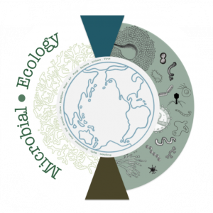

Ecología Microbiana
La ecología y la microbiología parecían conceptos que no tenían nada en común por varias décadas, y el campo de la ecología microbiana tomó mucho tiempo en surgir y consolidarse. Esto en gran parte por la falta de herramientas y tecnologías para explorar este campo. No obstante, con el desarrollo de tecnologías, algoritmos y metodologías que permiten estudiar simultáneamente todos los (micro)organismos presentes en un ambiente en un momento específico, en las últimas década ha sido posible estudiar los microorganismos y sus interacciones de manera conjunta en lo que hoy se conoce como ciencias meta-ómicas.

En un principio la metagenómica nos permitía acceder a la composición y potencial genético de ambientes, posteriormente la transcriptómica nos permitía aproximarnos a la expresión de genes en esos ambientes y actualmente con la proteómica y metabolómica podemos comenzar a entender las diferentes interacciones entre los miembros de una comunidad. Sin embargo, todas estas técnicas se han desarrollado bastante rápido y las tecnologías y algoritmos para el análisis e interpretación de estos datos ha evolucionado más en respuesta a necesidades particulares de grupos de investigación que en un pensamiento racional para optimizar el uso de los datos y recursos aprovechando los avances en capacidades de cómputo con las que se cuentan en la actualidad.
Relaciones ecológica virus-hospedero en el intestino humano
La microbiota intestinal humana es elconjunto de todos los organismos que viven en el tracto gastrointestinal del ser humano. Esta asombrosamente diversa comunidad está compuesta por los 3 dominios de la vida y sus respectivos virus. Desde el surgimiento de las técnicas moleculares para el estudio de comunidades microbianas, la microbiota intestinal ha sido uno de los principales blancos de estudio y grandes consorcios como el HMP en EE.UU. y el MetaHIT en Europa han dedicado una gran cantidad de recursos en caracterizar estas comunidades. Sin embargo, el mayor esfuerzo de estudio de estas comunidades se ha realizado en su componente procariote ignorando en su mayor parte el componente viral. De hecho, este componente puede ser mayor en número y diversidad que el mismo componente bacteriano. Los virus están presentes en cualquier ambiente donde se encuentre un potencial hospedero y sus dinámicas de predación, ciclos líticos o lisogénicos pueden tener importantes consecuencias en las dinámicas y comportamiento de la comunidad en general. El estudio y caracterización de las relaciones entre virus (con hospederos bacterianos o eucariotes) y sus diversas implicaciones en la comunidad y por ende sus consecuencias en la salud del hospedero humano, son un objetivo importante de la investigación del grupo.